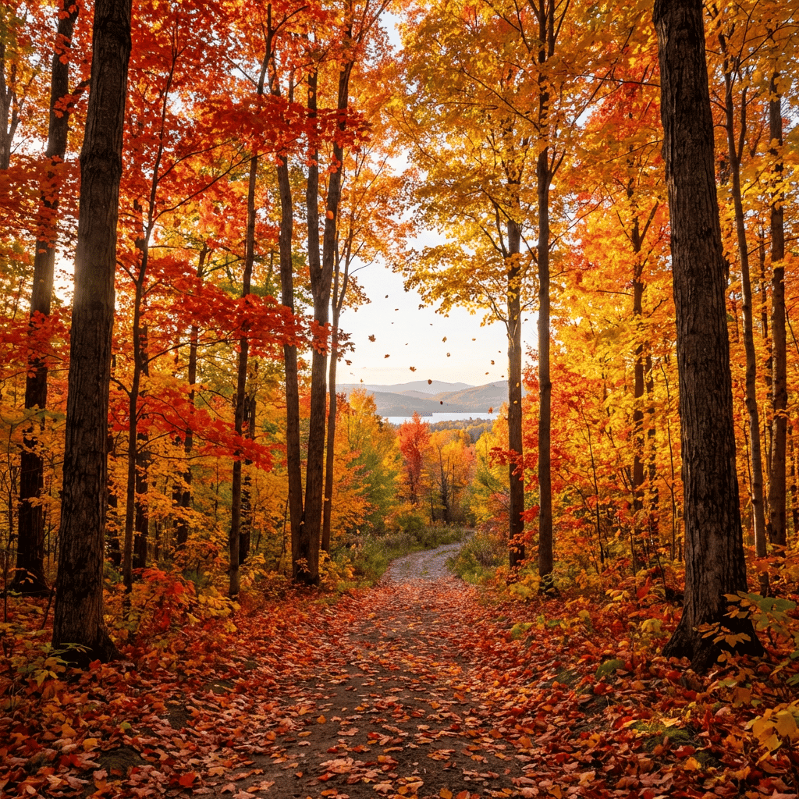

Our maple syrup comes from one farm in Quebec's Appalachian Mountains.
In winemaking, terroir describes how a region's climate, soils, and terrain give a wine its distinctive character. A Bordeaux tastes different from a Napa Valley because the land is different.
The maple syrup we sell comes from sugar maples on one farm in Quebec's Appalachian Mountains. This is what we mean by maple terroir.
We sell maple syrup from early and late in the maple season. All of it is Canada Grade A.
Early harvest
Sap collected early in the season makes our organic maple syrup and the First Tap Nouveau.
Late harvest
Sap collected later in the season makes the syrup in our maple leaf bottles and 100 mL jug, which has a stronger maple flavor.
Every bottle of Maple Terroir syrup comes from one farm in Quebec's Appalachian Mountains.
Founded
Generation Business
Certified
Countries Served
Shop maple syrup from one farm in Quebec's Appalachian Mountains.